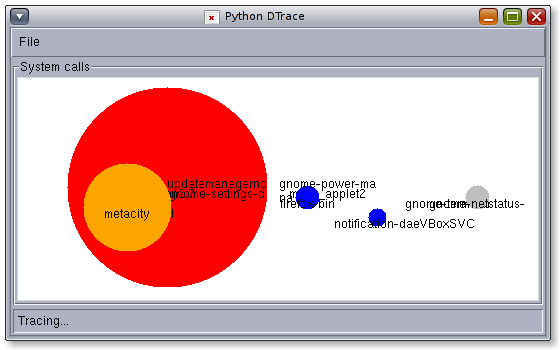

A
Python DTrace consumer using libdtrace and ctypes - Now Python can be used as DTrace Provider and Consumer...
Examples
There are some examples available in the examples directory. The following screenshot shows a Python Tkinter GUI which shows the current (life updated) number of syscalls per execname. The bigger the circle, the more syscalls where made.

Download
You can download this project in either
zip or
tar formats.
You can also clone the project with Git
by running:
$ git clone git://github.com/tmetsch/python-dtrace
The project is also hosted on pypi and can be installed using pip or easy_install 'python-dtrace'.